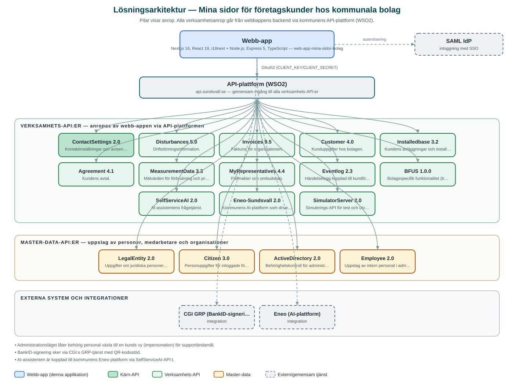

Mina sidor för företagskunder hos kommunala bolag
Självserviceportal där företag som är kunder hos de kommunala bolagen ser sina avtal, fakturor, förbrukning och driftinformation samt sköter fullmakter och medgivanden.
Om applikationen
Tjänsten är en samlad ingång för företagskunder hos Sundsvalls kommunala bolag. Efter inloggning väljer användaren vilken organisation den vill företräda och får sedan en översikt över aktuell energiförbrukning och produktion, avtal, fakturor, driftstörningar och händelser kopplade till kundförhållandet.
Företrädare kan hantera medgivanden och fullmakter, se statistik över förbrukning samt använda självservicefunktioner. Vissa åtgärder bekräftas med BankID-signering. En inbyggd AI-assistent kan svara på frågor om avtal, fakturor och statistik.
Portalen har även ett administrationsläge där behörig personal kan agera i en kunds ställe för att ge support.
Det här stödjer applikationen
- Översikt och förbrukning – Aktuell energiförbrukning och produktion per månad med jämförelser bakåt i tiden.
- Avtal och fakturor – Samlad vy över organisationens avtal och fakturor hos de kommunala bolagen.
- Driftinformation – Information om pågående driftstörningar som berör kundens anläggningar.
- Fullmakter och medgivanden – Hantering av vem som får företräda organisationen, med BankID-signering.
- AI-assistent – Inbyggd assistent som svarar på frågor om avtal, fakturor och statistik.
Teknisk dokumentation
Nedan beskrivs hur applikationen är uppbyggd, vilka API:er den använder och vad som krävs för att driftsätta den. Informationen är härledd ur källkoden och dess konfiguration på GitHub.
Arkitektur

Applikationen består av en webbaserad frontend (Next.js 16, React 19, i18next) och en backend (Node.js, Express 5, TypeScript) som utvecklas i samma kodbas. Verksamhetsanrop går via kommunens gemensamma API-plattform (WSO2) – frontend pratar aldrig direkt med underliggande system. Inloggning: SAML (SSO) för inloggning, BankID-signering via CGI GRP för underskrifter; separat admin-inloggning. Övriga integrationer som förekommer i koden: CGI GRP (BankID-signering via Funktionstjänster), Eneo (AI-plattform), SAML IdP.
Teknikstack
- Frontend: Next.js 16, React 19, i18next
- Backend: Node.js, Express 5, TypeScript
- Test: Jest (enhetstester), Cypress (e2e)
API-beroenden
Applikationen konsumerar följande API:er via kommunens API-plattform. Versionerna är hämtade ur källkodens API-konfiguration.
| API | Version | Användning |
|---|---|---|
| ContactSettings | 2.0 | Kontaktinställningar och aviseringsval. |
| Disturbances | 5.0 | Driftstörningsinformation. |
| Invoices | 9.5 | Fakturor för organisationen. |
| Customer | 4.0 | Kunduppgifter hos bolagen. |
| Installedbase | 3.2 | Kundens anläggningar och installationer. |
| Agreement | 4.1 | Kundens avtal. |
| MeasurementData | 3.3 | Mätvärden för förbrukning och produktion. |
| MyRepresentatives | 4.4 | Fullmakter och ombudskap. |
| Eventlog | 2.3 | Händelselogg kopplad till kundförhållandet. |
| BFUS | 1.0.0 | Bolagsspecifik funktionalitet (bolagens försystem). |
| SelfServiceAI | 2.0 | AI-assistentens frågetjänst. |
| Eneo-Sundsvall | 2.0 | Kommunens AI-plattform som driver assistenten. |
| SimulatorServer | 2.0 | Simulerings-API för test och utveckling. |
| LegalEntity | 2.0 | Uppgifter om juridiska personer och organisationer. |
| Citizen | 3.0 | Personuppgifter för inloggade företrädare. |
| ActiveDirectory | 2.0 | Behörighetskontroll för administrationsläget. |
| Employee | 2.0 | Uppslag av intern personal i administrationsläget. |
Konfiguration och driftsättning
- Miljöfiler: frontend/.env-example och backend/.env.example.local
- CLIENT_KEY och CLIENT_SECRET mot kommunens API-plattform (WSO2)
- SAML-inställningar med IdP-adress och certifikat
- GRP-inställningar (adress, tjänste-ID och åtkomstnyckel) för BankID-signering
- Kommun-ID (MUNICIPALITY_ID=2281)
Noterbart ur källkoden
- Administrationsläget låter behörig personal växla till en kunds vy (impersonation) för supportändamål.
- BankID-signering sker via CGI:s GRP-tjänst med QR-kodsstöd.
- AI-assistenten är kopplad till kommunens Eneo-plattform via SelfServiceAI-API:t.
Källkod
Källkoden är öppen och finns hos Sundsvalls kommun på GitHub. I källkodsförrådet finns även instruktioner för att klona, konfigurera och starta applikationen i egen miljö.